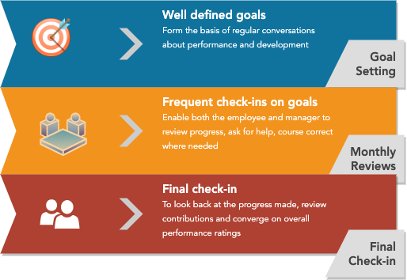

Jul 5th, 2020
In general, employee performance cycles are considered a painful experience for most participants. There are many reasons for this -
- No expectation setting
- Generic and high level expectation setting
- Role definitions and Job descriptions do not encompass everything that an employee does
- Frequent shifting in expectations
- Long performance review cycles
- Lack of accountability of evaluators
- Lack of documented progress through the cycle
- Quality of reviewers is not monitored
- Batching of reviews causes crammed up schedules and reduces individual attention
All these (and more) add up to employees getting surprised during reviews, and builds frustration overall even in organisations that take pride in how they treat their employees. A lot of work has gone into this field, and yet, there’s consensus on only one actionable measure - that reactive performance and progress measurement is not a healthy option. There are various methods that would allow you to get better on this front, I would share one such approach below.

(It may work for you only if you put in the effort to customise it to your work environment)
Clear Expectation Setting
Without clear and crisp expectations and goals, performance reviews become a political dance, and do more harm than help.
Start with the most important aspect of performance management - setting expectations. Most organisations have job ladders and high level role definitions; its important that these definitions provide the outlines during the goal setting process. The most important part, oft missed is, personalising the goals for the employee. Role definitions, Job descriptions are deliberately left at a high level and ambiguous by organisations so as to encourage people to not be limited by them, they cannot serve the purpose as goal documents.
Measurable goals
KPIs and Personal OKRs are both very good ways to set goals; goals should be SMART (mnemonic) -
- Specific - goals for a person should be specific and customised to them, not generic as explained above.
- Measurable - goals should be measurable, so as to measure progress. Subjective goals encourage different interpretations of a person’s performance, which isn’t desirable.
- Attainable - goals, even the big hairy audacious goals (BHAGs) should at the end of the day be attainable, if they are not, their presence is harmful.
- Relevant - an employee’s goals should be relevant to the work they do and how they help the organisation achieve success.
- Timebound - well defined timelines on goals help employees and managers prioritise work in order to achieve goals.
A template
Here’s a template you can use to help someone set goals for themselves, then work with them to review and close their timebound goals. There are 2 parts to the template -
- Introspection - The 5 questions in the template help build the context to build goals on top of.
- Writing goals - The template is opinionated towards setting personal OKRs, you may choose a different format.
- Specifying help needed - Ensure that an employee is not only allowed but encouraged to ask for help they need to achieve their goals.
If the goals are vague, help them refine.
Suggested mix
I suggest that goals for a person should be a mix of personal and team goals, ergo -
- one goal that helps them add a new skill
- one goals that is tied to the what they are delivering
Examples -
| Objective | Example key results to watch |
|---|---|
| Implementing at least one feature that helps our customers win | Increase in active users, order volumes per active user that could be attributed to the feature |
| Improve quality of product | Decreased bugs per release |
| I want to be consistent in writing code. | No. of modular commits to production, No. of days with at least 5 modular commits |
| I want to contribute to the community | No. of technical blogs ,No. of open source contributions,No. of time spoke at conferences |
| I want to read regularly | No. of books read |
Once the objectives and metrics to watch are decided, the next step is to define achievable targets. Goal setting may have the drawback of inhibiting implicit learning: goal setting may encourage simple focus on an outcome without openness to exploration, understanding, or growth. A solution to this limitation is to set learning goals as well as performance goals, so that learning is expected as part of the process of reaching goals.
Sign-offs
Employees should work with their managers to sign-off on the goals. In addition, it does help if goals for every employee are internally available to everyone who is part of the organisation.
Frequent Reviews
1-1 meetings
Divergence from expectations increases with time, so avoid long review cycles. If it hurts, do it more often. Shortening review cycles helps to quickly -
- identify if someone needs help
- motivate someone who is on the right path
- adjust goals based on performance when needed
- course correct Therefore, once the goals are set, it is important to check in on them at least once a month. An easy setup is to dedicate at least one 1:1 meeting to goal reviews.
Monthly reports
To retrospect on how your staff is doing overall on this front, its important to get an aggregate view and measure progress. Its advisable that all the managers present a health check monthly. This exercise helps with 2 things -
- Identify hotspots where there may be managerial or situation issues that are hurting individuals meeting their goals
- Publishing progress helps everyone gain momentum, sort of like the flywheel effect
At the end of this review exercise, there may be need to dig deeper into some hotspots and then publish the learnings back to the team.
Final Reviews
At the end of the review cycle, if you have iterated and course corrected well, you should not really need anything special -
- No one in the system should be surprised by the outcomes
- Everyone should have a clear growth and improvement plan
Retrospective
This is also a good time to retrospect as a group about how the process went, and build a report card for each team, which hopefully looks like below, for the problems that we started with.
| Expectation | Solved/Handled ? |
|---|---|
| Proper expectation setting | ✅ |
| Generic and Specific expectation setting | ✅ |
| Well discussed and agreed upon shifting in expectations, if any | ✅ |
| Clear accountability of evaluators | ✅ |
| Documented progress through the cycle | ✅ |
| Individual assessments and no end of cycle rush | ✅ |
At this time, you will start seeing different problems; the good part is, by iterating frequently, you should be able to identify, course correct and observe changes faster and reduce the pain.

Rinse, Repeat.